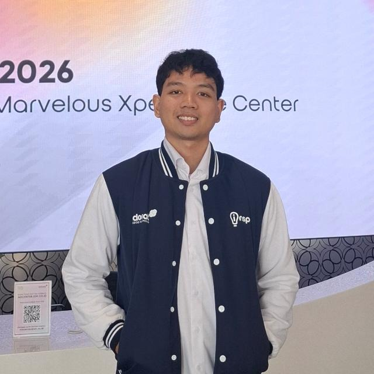
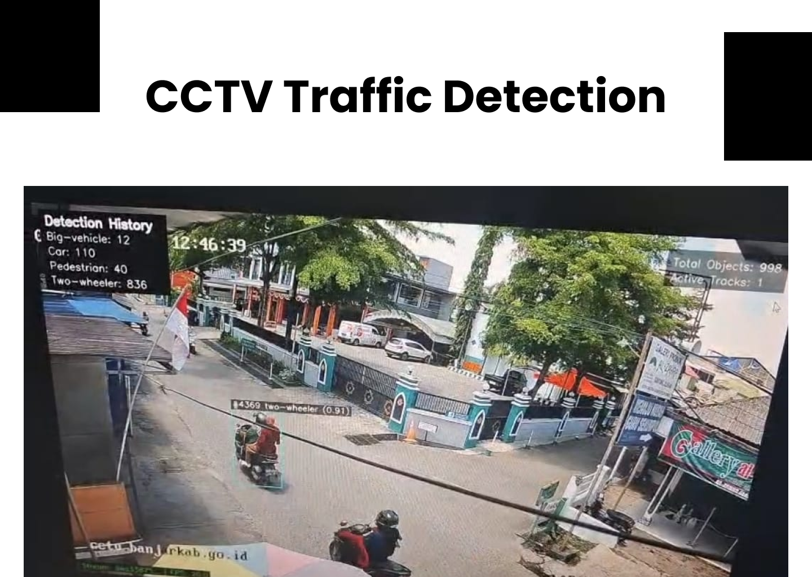
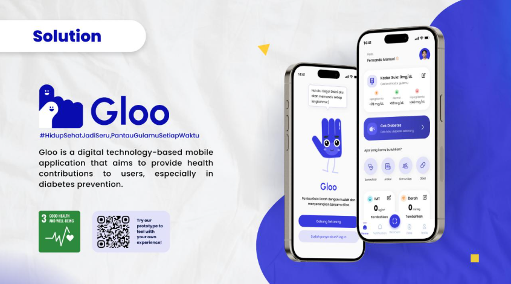
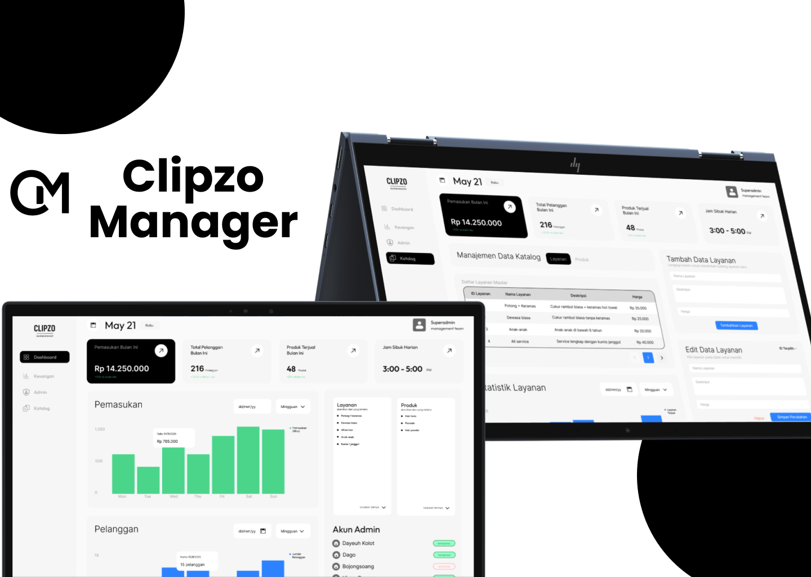
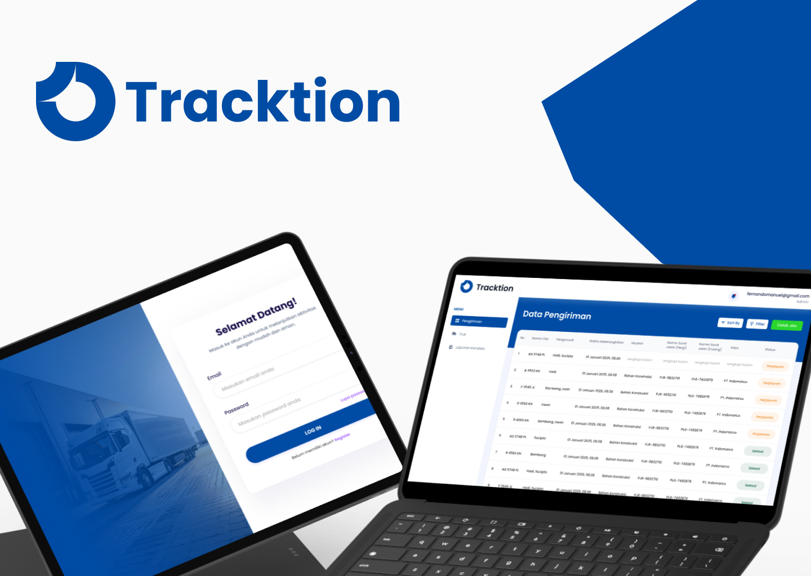

Data analytics and BI
Cleaning and modelling data in Python and SQL, then building Power BI dashboards that answer the questions people actually ask.
Python, SQL, pandas, Power BI, ETL
Data analyst, business intelligence and AI automation
I turn operational data into dashboards and automations that teams actually rely on.
Information Systems graduate and BNSP Certified Associate Data Scientist. I work in Python, SQL, Power BI and UiPath, and I own the whole job: from the stakeholder's first request through deployment.
Open to data analyst, BI and automation roles in Jakarta

I like the part of the job where a messy spreadsheet becomes a report that people trust, and a manual task turns into something that just runs.
At Indosat Ooredoo Hutchison I sat between the National Customer Success team and the systems they depend on. I took their requests, worked out the solution, built it, and saw it through to deployment. That meant Salesforce-to-Power BI pipelines, a UiPath bot that runs every week, and a retention programme that brought churn down in its pilot area.
Before that I trained computer vision models and shipped them as APIs. That engineering background is why my dashboards come with clean pipelines behind them, and why my automations hold up after handover.
Cleaning and modelling data in Python and SQL, then building Power BI dashboards that answer the questions people actually ask.
Python, SQL, pandas, Power BI, ETL
Designing RPA bots in UiPath REFramework that take repetitive, rule-based work off people's plates, with tracking built in from day one.
UiPath, REFramework, Salesforce integration
Training and deploying machine learning models, from computer vision to classification, and putting them behind APIs that other systems can call.
scikit-learn, TensorFlow, YOLO, FastAPI
Indosat Ooredoo Hutchison, National Customer Success
Human Plus Institute
Two pieces of data and automation work from Indosat, then the engineering projects that got me here.
Customers with a poor network experience tend to leave quietly. PAS Care finds them in the data and reaches out before they complain. I built the RPA automation behind it and the dashboard that measures whether it works.
About 40% less churn in the pilot area
A weekly roaming dashboard used to depend on someone exporting and reshaping data by hand. I automated the whole flow, so the report refreshes on schedule and every week uses the same logic.
Zero manual steps in weekly reporting

Real-time vehicle detection and counting from CCTV feeds, used to help a food and beverage client choose outlet locations.
YOLO, Python, FastAPI, Docker

Grades packaged food by sugar content from a photo. 96% accuracy with MobileNetV2 on 1,046 images I labelled myself.
TensorFlow, MobileNetV2, Python

A freelance financial system for a barbershop, with a custom REST API syncing live data. I was the sole developer, from requirements to training.
Laravel, PostgreSQL, REST API

Live vehicle location tracking and asset management, built on Node.js and Google Cloud.
Node.js, Google Maps API, GCP
I speak Indonesian fluently and English at a professional level.
Bachelor of Information Systems, Sep 2022 – Sep 2026
GPA 3.95 out of 4.00
Outstanding Student Award at faculty level.
BNSP, Indonesia's National Professional Certification Agency
National undergraduate competition for AI in education, 20+ teams
Machine learning path, top 10% of 4,000+ participants
Creative Entrepreneurship Summit, with a diabetes app, 20+ teams
As coach of AIESEC Future Leaders, I led an 11-person team from planning to execution. Before that, on the finance and customer experience committee, I managed the budget and reporting for an 80+ attendee project and closed it profitably.
If you're hiring for data analytics, BI or automation, or have a process that should not still be manual, I'd like to hear about it.